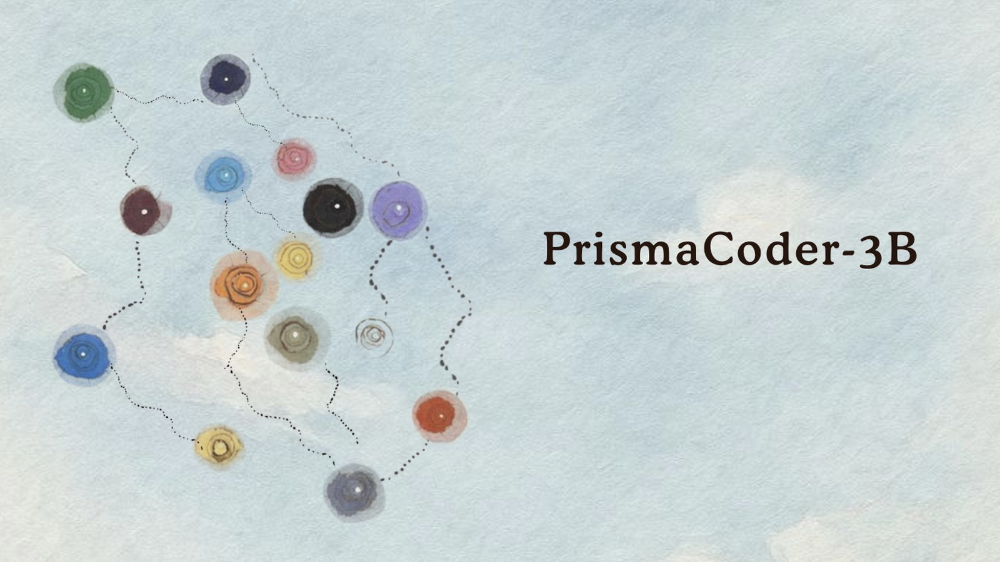

Good morning. The received wisdom is that a model worth using has to be big, or paid for, or both. PrismaCoder-3B is a small argument against that. It is three billion parameters wide, trained to do exactly one thing — generate and edit Prisma ORM schemas and client code from plain-English instructions — and it was built on a single free-tier GPU on Kaggle, the kind of hardware anyone can borrow twelve hours at a time. On the project's own 1,200-task benchmark it scores 0.9992. That number now ships with an asterisk its author wrote himself: the benchmark, until it is fixed, could not see one of the most common mistakes a Prisma schema can contain. Both halves of the story were published together, on purpose.
What: PrismaCoder-3B — a Qwen2.5-Coder-3B fine-tune specialized for Prisma ORM schema and client-code generation, trained through a three-stage pipeline (SFT → DPO → GRPO).
When: September 2026, released on Hugging Face under Apache-2.0 at sandeeprdy1729/PrismaCoder-3B. ~653 downloads in its first month.
Why it matters: a working proof that narrow specialization plus a free GPU can beat far larger general models on one task — and a rare, source-verified case of an author disclosing the blind spot in his own evaluation rather than waiting to be caught.
What actually shipped
PrismaCoder-3B is a fine-tune of Qwen2.5-Coder-3B-Instruct — Alibaba's 3.09-billion-parameter coding model — narrowed onto a single framework. Instead of trying to write code in every language, it does one vertical extremely well: Prisma, the TypeScript/JavaScript ORM that a large share of Node.js developers use to talk to a database. Give it the schema you already have and an instruction ("add a Comment model related to Post, with a body and a createdAt"), and it writes the schema.prisma edit or the client query to match.
The model is published on Hugging Face by Sandeep Thummala, under a research report on the TIMPS site that documents the whole method. It has a permissive Apache-2.0 license and ships both merged fp16/bf16 weights and a GGUF export for running it locally through llama.cpp or Ollama. At three gigabytes of parameters, that means the entire thing runs on a laptop.
How you train a specialist on a GPU you don't own
The interesting engineering here isn't the model — it's the constraint. Training ran on a single free-tier NVIDIA T4 with 16GB of memory, inside a Kaggle notebook that is killed every twelve hours. A three-stage RLHF-style pipeline is not a two-hour job, so the whole thing had to be built to survive being interrupted and resumed, over and over, without losing progress or corrupting the run.
Two infrastructure bugs are worth recording because they generalize well beyond this project. First, Kaggle hands you a notebook that provisions two T4s; even when the code asks for one device, Hugging Face's Trainer quietly wraps the model in torch.nn.DataParallel. That produces a slow memory leak as activations get gathered onto one GPU, and the run dies with an out-of-memory error hours in. The fix is blunt: set CUDA_VISIBLE_DEVICES=0 before anything imports CUDA, so the second GPU never exists. Second, GRPO's three passes per step (generate, then policy forward, then reference forward) fragmented GPU memory until the allocator refused to hand out space it nominally had. That one is healed with expandable_segments:True and a cache-clear every five steps.
The lesson for anyone trying this at home: on free hardware, the training recipe is the easy part. The session limit is the actual adversary, and it is defeated with step-level checkpointing every 10–25 steps plus a resume mechanism you write yourself.
The three-stage recipe, in plain language
The model was taught in three passes, each merging its small adapter weights back into the base before the next began:
- SFT — supervised fine-tuning. Show the model thousands of correct examples: this instruction plus this schema, produce this output. The model learns the shape of the task.
- DPO — direct preference optimization. Show it pairs — one output better than another — and nudge it toward the preferred one. No reward model, no fragile RL loop; just "this, not that."
- GRPO — group relative policy optimization. The online-RL stage, the same family of method behind DeepSeek's reasoning breakthroughs. The model generates several candidate schemas; the same automated verifier scores them; and the ones that pass are reinforced. The verifier is both the data filter and the reward signal — a neat shortcut, and the source of the problem in Section 05.
Adaptation throughout is QLoRA: the base model is frozen and compressed to 4-bit, and only a tiny set of low-rank adapter matrices — a fraction of a percent of the parameters — is ever trained. That's what makes a 3B model fit inside 16GB alongside the optimizer. A fixed seed (20260830) makes the whole thing reproducible.
The evidence
On PrismaBench — a 1,200-task benchmark the project built itself, spanning twelve categories from greenfield schema authoring to security-relevant tasks across three difficulty levels — the model lands at 0.9992 pass@1, with a Wilson 95% confidence interval of [0.9953, 0.9999]. Eleven of twelve categories are perfect; a single task in "complex reads" fails. One error, across 1,200.
The more telling number is the comparison. On an identical 200-task subset, with the same prompts and the same greedy decoding, PrismaCoder-3B edges out every baseline — including models with far more parameters:
Same evaluator, same prompt construction, same greedy decoding (max_new_tokens=768) across every model. The 200-task figure and the full 1,200-task figure (0.9992) come from different, overlapping samples and are consistent with each other — the full-benchmark number is the authoritative one.
The base model it was built from scores 0.67. The fine-tuning is worth roughly a third of the available accuracy, on this task, for a training run that cost nothing but time.
“A benchmark result and the boundaries of what it measures are inseparable parts of the same claim.”
— from the PrismaCoder-3B research reportThe flaw in the scoreboard
Here is where the story turns. After publishing, the author ran a plain manual test — the kind of thing a benchmark is supposed to prevent you from having to do. He asked the model for a simple User/Post relationship. It produced clean, confident, well-formatted output. It also produced this:
author User "authorId" -> "id"
That is not valid Prisma. The real syntax is author User @relation(fields: [authorId], references: [id]). The string-arrow notation the model invented has no meaning in the Prisma schema language — and the reciprocal posts Post[] field Prisma requires on the other side of a one-to-many was missing entirely. Prisma's own validate command would reject the schema outright.
So why did a benchmark that scores almost perfectly not catch it? The author went and read the checker's source code. The static "V0" gate — a lightweight validator called LightValidator — does three things: it confirms the output parses, that code fences are balanced, and that the model and field names mentioned are grounded in the schema it was handed. Its first check parses the task's input schema, not the model's output. Its second check looks for well-formed client call sites. Nowhere does it validate the generated schema text as Prisma schema language — and in particular it never inspects whether a relation field carries a correctly formed @relation attribute, or whether both sides of a relation exist.
The consequence is exact and uncomfortable: the more thoroughly the benchmark was designed around checking client queries, the more completely it ignored the one thing the model is still bad at. A schema with a missing, malformed, or invented relation clause passes every check the gate performs. The author classified it plainly — "a structural limitation of the evaluation methodology, not an isolated scoring error" — and noted that it applies to every pass@1 number in the report.
What the numbers don't say
The disclosure doesn't stop at the relation bug. Read the fine print, and the claims get quieter in the right places:
- The gate is static. V0 checks form and grounding, not function. A fuller chain — actually running Prisma's validator, generating a client, type-checking and executing against a live database (the project's "V1–V5") — was designed but never run, because no Node.js ≥18 environment was available. So 0.9992 means "well-formed and schema-grounded," not "compiles and runs."
- The benchmark is bespoke. PrismaBench was built by the same project, for this model. That makes it useful for measuring progress and catching regressions — and useless as an independent leaderboard. The method itself demands that you say so out loud.
- The card is more cautious than the report. Hugging Face's model card lists only the base-model comparison as currently valid, and explains that comparisons against other released coding models "have not been run through this same evaluator on this same held-out task set." The report does include that 200-task comparison, with its decoding and prompt conditions matched — but the project is careful, on the card, about how far that generalizes.
- The data is small. Only ~3,000 of ~17,500 available training records were used, against a full-scale design target of 120,000 synthetic records. The author calls the result "a proof of concept at this data scale, not the ceiling of the method."
- One checkpoint is unscored. The published number comes from the GRPO checkpoint. A later self-play RL round 2 completed, matched GRPO's internal score, and has not been benchmarked on the full set.
None of this makes the result less real. It makes the claim honest. A high pass@1 under a fast, cheap, static gate is a genuine and reproducible signal — it just isn't a certificate of functional correctness, and the model card tells you to run prisma validate on anything it produces.
What to watch next
- The full gate chain (V1–V5). This is the honest scoreboard. Re-running evaluation in a Node-enabled environment — validate, generate, type-check, execute — is what turns 0.9992 into a number that means something about working code.
- Closing the relation gap. Extending the static checker to parse generated schema as Prisma schema language, and to verify relation-clause completeness, is one focused fix — and the direct test of whether the disclosed limitation gets repaired or just disclosed.
- Scale. Retraining at the 120,000-record target, with the full curated preference set, is the experiment that tells you whether this was a lucky proof of concept or a method with a curve behind it.
- The RL round 2 checkpoint. Scored against the published GRPO checkpoint, it answers whether the self-play stage is worth anything on real tasks.
- The wider pattern. PrismaCoder-3B is one of a growing cluster of results — Overmind's legal, biomedical and aviation benchmarks among them — where a small model tuned on one task beats a frontier generalist on that task. The pattern is now established; the open question is how far it stretches, and how many of those wins survive a stricter gate.
The TIMPS verdict
The specialization is the point, not the size. A 3B model on a free GPU did not out-reason a 7B or a frontier system; it out-specialized them, on one narrow, very regular task. That is a genuinely useful thing to be true, and it is repeatable by a single person on a laptop.
The disclosure is the actual headline. It would have been easy to publish 0.9992 and stop. Finding a hole by hand, reading your own checker, and stamping the caveat onto the model card is the harder path — and it is the one that makes the number trustworthy rather than merely impressive.
Caveat the score hard. 0.9992 is a static-gate pass, on a home-made benchmark, on a checkpoint that predates the final training round. Read it as "the specialization worked," not as "the code is correct."
The whole story in one line: a free Kaggle GPU, three billion parameters, and an author honest enough to publish the flaw in his own scoreboard — which is a better advertisement for the method than the score ever was.
Facts in this piece were compiled from the PrismaCoder-3B model card on Hugging Face, the project's research report on timps-website.vercel.app, the Qwen2.5-Coder technical report and model cards, the original QLoRA, DPO and GRPO (DeepSeekMath) papers, and reporting on the broader small-specialist-model trend. Benchmark figures are as reported by the project and are not independently audited; the model's own card instructs users to validate generated schemas before use. This is news analysis by an independent publication — not investment advice, not AI advice, and not a substitute for running Prisma's own tooling against generated code.
Sources
- Hugging Face — PrismaCoder-3B model card (Sandeep Thummala, 2026)
- TIMPS Research — PrismaCoder-3B: A Specialized Code-Generation Model for Prisma ORM (September 2026)
- Hugging Face — Qwen2.5-Coder-3B-Instruct (base model)
- arXiv — Qwen2.5-Coder Technical Report (2024)
- Prisma — official documentation
- arXiv — QLoRA: Efficient Finetuning of Quantized LLMs (Dettmers et al., 2023)
- arXiv — Direct Preference Optimization (Rafailov et al., 2023)
- arXiv — DeepSeekMath: Pushing the Limits of Mathematical Reasoning (GRPO method, 2024)
- Complete AI Training — Trained small language models outperform frontier models on specialized tasks (Overmind benchmarks, Oct 2026)
- Small specialized models beat the frontier at one job (Jul 2026)
One story a day,
explained properly.
New TIMPS deep dives land regularly — paired with the five-signal PostCard every morning. Free forever.